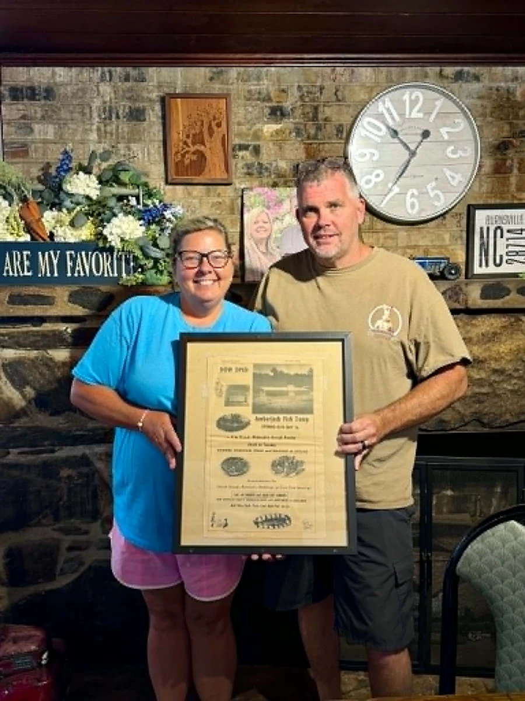
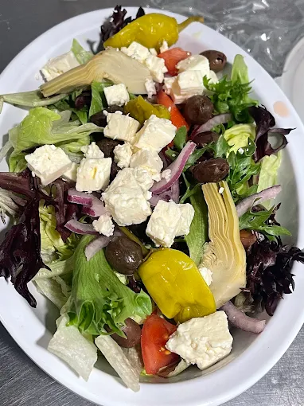

Three Generations on Highway 19E
A Yancey County family kitchen with roots that run six decades deep.
“The Ambered Jack name is a throwback to the late ’60s and ’70s, when this restaurant was The Amber Jack.”
Yancey Fish Camp
It started with Bill Riddle, who opened the doors of this very location as the Yancey Fish Camp, a community gathering spot during the era of the original Amber Jack.
Yancey Fish & Steakhouse
The next generation, Larry and Phyllis Silvers, carried the torch, running the restaurant as a well-loved fish and steakhouse that fed locals for decades.
The Ambered Jack
In April 2024, Laura and her husband Derrick Boyd reopened the family table as The Ambered Jack, a from-scratch Italian kitchen serving hand-tossed pizza, house-made pasta, subs, salads, wings, and desserts baked daily. Same address, same family, a brand-new chapter.

A room that feels like home
Stone walls, a warm fireplace, and food made by hand. Come see why it’s a Yancey County favorite.



Come taste the next chapter
Stop in for lunch or dinner, Tuesday through Saturday, 11am to 9pm.
Browse the Menu